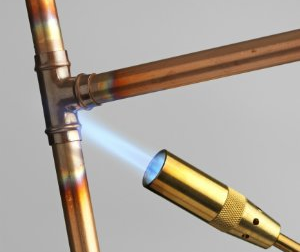

How to unclog a toilet without a plunger
How to sweat copper
Step 1: Assemble your tools and materials. For this job you're going to need a few things.
- Tube cutter
- Propane torch
- Emery cloth, 120 grit
- Flame protector cloth
- Fire extinguisher
- Fitting brush
- Striker (if your torch doesn't have one built in)
- Gloves
- Lead-free solder
- Paste flux
Step 2: Cut your copper to length using the tube cutter. Go slow and avoid applying to much pressure as this can cause the pipe to dent.
Step 3: Remove burrs inside the copper using the reaming attachment on your tube cutter.
Step 4: Using the emery cloth, clean the outside of the pipe end until it shines.
Step 5: Using the fitting brush, clean the inside of the pipe fitting.
Step 6: Brush the outside of your tubing and the inside of the fitting with an even layer of flux. Then seat the tube into the fitting to full depth. Then wipe off any excess flux.
Step 7: Apply heat. Heat the joint evenly holding the solder against the seam of the joint on the opposite side of the torch. The solder will melt and appear to suck into the joint. Make sure that that the joint appears full on all sides.
Step 8: Allow the joint to cool and then test for leaks. Slowly turn the water on and watch for pinhole jets of water.
Step 9: Put your tools and materials away! You'll thank yourself later!